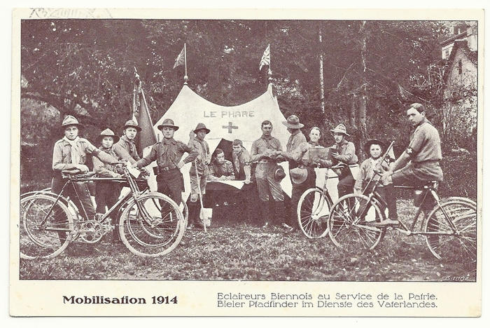

Militär (Text)
Willkommen zum Podcast mit dem Thema “Die Pfadi und das Militär"
Der Pfadi wird nachgesagt, sie sei "militärisch”.
Die PBS hat vor einigen Jahren ein neues Wording eingeführt, um bei der Benennung einen klaren Unterschied zu machen:
- Statt Uniform tragen wir Hemd
- Statt Übungen veranstalten wir Aktivitäten
- Wir haben kein Antreten, wir haben Start der Aktivität oder Ahtänzle
Während diese Begriffe in jüngerer Geschichte im Schweizer Kontext einen Unterschied machen, sollten wir uns aber fragen, warum wir Militär Material bekommen und warum die Struktur einer Pfadi-Abteilung (Abteilung übrigens historisch ein militärischer Begriff für ein Bataillon ohne adeligen Kommandanten) nach wie vor militärisch wirkt.
Fangen wir vorne an:
Was allen klar sein dürfte, ist das BiPi, Lieutenant-General Robert Stephenson Smyth Baden-Powell, 1st Baron Baden-Powell, britischer Armee Offizier war und seine Ideen für sein Bestseller Jugendbuch “Scouting for Boys” aus früheren Büchern wie “Aids for Scouting” stammen, welches nicht an die Jugend grichtet gewesen war, sondern an Offiziere in der militärischen Aufklärung.
Spannend in diesem Kontext ist auch, dass BiPi bei Ausbruch des 1.WK (damals 57 jährig und Lieutenant-general (drei sterne General - ganz hohes Tier)) von Lord Kitchener nicht in die Armee einberufen wurde. Zitat: "I could lay my hand on several competent divisional generals but could find no one who could carry on the invaluable work of the Boy Scouts"
→ Also, die militärische Führung der Briten im 1.WK sah Boy Scouting als unbezahlbar und wichtig für den War Effort an.
In einer späteren Publikationen machte BiPi jedoch klar, das “Scouting vor Boys” kein “rewrite” von “Aids for Scouting” sei und kein Militarismus enthält sondern nur einige Techniken ausleiht.
In der selben Publikation geht BiPi auch mit der damals schon populären Aussage, dass Scouting militärische Hierarchien hätte ins Gericht: Eine Leitperson in der Pfadi hätte weder etwas von einem Offizier oder einer Lehrerin, viel mehr ist die Leitperson so etwas wie ein grosser Bruder oder eine grosse Schwester welche nicht über den Teilnehmenden steht. Diese Aussage wird auch von einigen Biographien über BiPi unterstützt
Das Tragen einer Uniform sei hingegen klar militärischen Ursprungs, aber kein Problem da die Vorteile überwiegen würden: Gefühl der Zusammengehörigkeit, gleich angezogen egal aus welcher sozialen Schicht und “the boys like it”.
→ Ich glaube wir alle wissen den Wert von Hemd und Krawatte zu schätzen. Gerade wenn man auf einem Hike Fremde nach einem Schlafplatz fragt.
Abschliessend zu BiPi und Militarismus noch folgendes: Seine “Scout method” widerspricht in wichtigen Punkten dem Militarismus: Individualität wird gefördert (entgegen militärischer uniformität), es wird bekräftigt eigene Entscheidungen zu fällen (entgegen einem Kommandanten zu folgen), Learning-by-doing (statt Drill) und schliesslich natürlich “Doing Good”.
Diese Scout Methode wurde den Briten zum Verhängnis, als sie Scouting als Instrument kolonialer Autorität in Afrika einsetzen wollten. Denn die Afrikanischen Pfadfinder schlossen sich solidarisch zusammen und pochten auf Selbstbestimmung statt dem Gehorsam der englischen Krone.
----
Dass in den deutschsprachigen Ländern das Konzept Junge leiten Jüngere (welches von BiPi stammt) so konsequent angewendet wird, im Gegensatz zu zB angel-sächsischen Pfadis, hat damit zu tun das neben BiPis Ideen und Büchern noch andere Gruppen Einfluss darauf hatten und haben wie wir heute Pfadi machen. So auch die Wandervogel Bewegung. Wahrscheinlich verdanken wir ihnen in der Schweizer Pfadi die Tradition der “Hikes”, den Aktivitäten am Samstag und das Konzept Junge leiten Jüngere.
Die Wandervögel waren eine in der Schweiz 1907 gegründete, aus Deutschland stammende Bewegung aus Schülern und Studentinnen welche sich jedes Wochenende zum gemeinsamen Wandern trafen. Die Bewegung war strikt anti-patriotistisch und anti-militärisch. Interessant ist aber, dass Zahlen zur militärischen Beförderung im 1.WK von deutschen Wandervöglen vorliegen. Wehrmänner welche Mitglieder der Wandervögel waren, wurden öfter befördert als nicht-Wandervögel. Jeder vierte Wandervogel in der kaiserlichen Armee wurde befördert, während es unter den nicht-Wandervöglen nur jeder siebte war.
Leider gibt es keine solche Zahlen zu Beförderungen in der Schweizer Armee heute, aber die Vermutung liegt nahe, das es ähnlich sein dürfte.
Die Wandervögel in der Schweiz vermischten sich in den 50ern mit den Pfadis, der Verein Wandervögel wurde aufgelöst.
----
Zum Schluss nochmal zur Schweiz und was die Pfadi hier mit dem Militär am Hut hat und hatte:
Als 1913 der Sweizerische Pfadfinderbund gegründet wurde, war dessen Zentralpräsident, ebenfalls ein Militarist, Oberst William Borel. Mehr lässt sich zur Gründungszeit in der Schweiz im Kontext Pfadi und Militär jedoch nicht herausfinden.
Als ein Jahr später jedoch der Erste Weltkrieg über Europa einbrach, änderte sich dies.
Die Schweiz blieb neutral, war aber von Kriegsmächten umschlossen. Der Erste Weltkrieg wird in der Schweiz auch als Grenzbesetzung 1914–1918 bezeichnet. Die Kriegsjahre stellten Volk und Armee vor schwere innere Probleme. Am 3. August 1914 wählte die Bundesversammlung Ulrich Wille zum General der Schweizer Armee. Der Gesamtbestand der aktiven Feldarmee betrug rund 250.000 Mann und 77.000 Ross. Dazu kam der Hilfsdienst mit rund 200.000 Mann.
Die freiwilligen Helfer versahen ihren Dienst in Zivilkleidern. Das Kennzeichen war die eidgenössische Armbinde in roter Farbe mit weissem Schweizerkreuz. Mit dabei dabei waren auch Pfadfinder, die ihre Uniform trugen. Von ihrem Einsatz zeugen verschiedene Fotos und Ansichtskarten.

Der Ausbruch des Zweiten Weltkrieges beeinflusstewiederum die Pfadfinderbewegung in der Schweiz: Pfadfinder wurden im Hilfsdienst eingesetzt, viele Pfadfinderinnen unterstützten das Rote Kreuz. Auch die Organisation der landwirtschaftlichen Hilfslager wurde anfänglich durch Pfadfinder und Pfadfinderinnen sichergestellt. Schon in den letzten Kriegsjahren, vor allem aber unmittelbar nach dem Ende des Zweiten Weltkrieges engagierten sich SPB und BSP in der Durchführung von Lagern für kriegsgeschädigte Kinder.
J+S ist die Nachfolgeorganisation des Militärischen Vorunterrichts, der zum Ziel hatte “Fitte Soldaten” ausheben zu können. Der militärische Vorunterricht, bekannt als Vorunterricht, war eine Schweizer Institution der freiwilligen militärisch-sportlichen Körperertüchtigung zwischen der obligatorischen Volksschule und der Rekrutenschule. Er war dem Militärdepartement untergestellt und war von 1909 - 1942 ein freiwilliges Programm für junge Männer. Eine Abstimmung ein solches Programm Obligatorisch zu machen scheiterte deutlich. Danach trat 1942 ein neugestaltetes, freiwilliges Vorunterrichtsprojekt in Kraft an dessen Ausarbeitung unter anderen die Pfadfinderbewegung wesentlich beteiligt war. Die wichtigen Kommissionen und Arbeitsgruppen bestanden mehrheitlich aus aktiven und ehemaligen Pfadfinderführern. Der Vorunterricht war absolut freiwillig und überliess den beteiligten Organisationen (unter anderen der Bund Evangelischer Jugend Schweiz BESJ) grosse Spielräume. Sie konnten dort ihre Übungen und Lager als Kurse anmelden, in dem man sich verpflichtete, sportliche, technische und körperliche Aktivitäten durchzuführen und wurden dafür finanziell und mit Materiallieferungen aus der Vorunterrichtskaserne in Thun unterstützt. Viele solcher Übungen und Lager wurden auch von weiblichen Teilnehmern besucht.
Die neu geschaffene Zentralstelle für Vorunterricht, Turn-, Sport- und Schiesswesen eröffnete 1942 das Ausbildungszentrum in Magglingen und gründete 1944 die Eidgenössische Turn- und Sportschule. Bis 1971 wurden über 50'000 Vorunterrichtsleiter ausgebildet. Der freiwillige Vorunterricht umfasste neben Kursen mit sportlichen und technischen Aktivitäten, jährliche Leistungsprüfungen, Winter- und Sommerlager und Kurse im Gebirge. 1972 wurde der Vorunterricht von Jugend + Sport (J+S) abgelöst.
Abschließend kann man also feststellen, dass die Pfadi in der Schweiz nie eine militärische Organisation war, jedoch durch die Weltkriegen nahe an die Armee gerutscht ist und vor Allem einen sehr aktiven Part gespielt hat den militärischen Vorunterricht zum heutigen J+S umzubauen.
Quellen
Quellen BiPi und Militarismus:
https://phdessay.com/boy-scouts-and-militarism/
http://www.netpages.free-online.co.uk/sha/military.htm
Quelle Deutschsprachige Pfadi Entwicklung:
https://de.wikipedia.org/wiki/Pfadfindergeschichte_im_deutschsprachigen_Raum
Quelle 1.WK und Pfadi Schweiz:
https://www.pfadfinder-briefmarken.ch/hilfseinsatz-von-schweizer-pfadfindern-im-1.-weltkrieg.html
Quellen J+S / Vorunterricht:
https://de.wikipedia.org/wiki/Jugend_und_Sport
https://de.wikipedia.org/wiki/Milit%C3%A4rischer_Vorunterricht